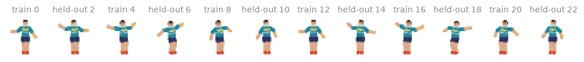
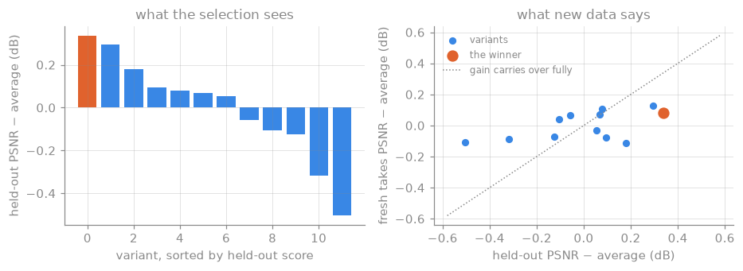
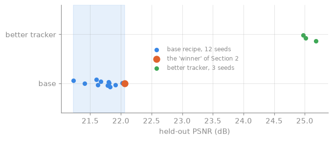
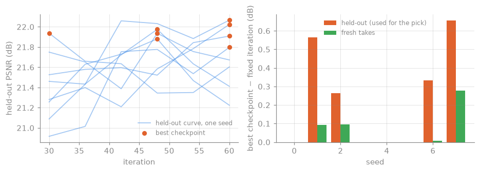
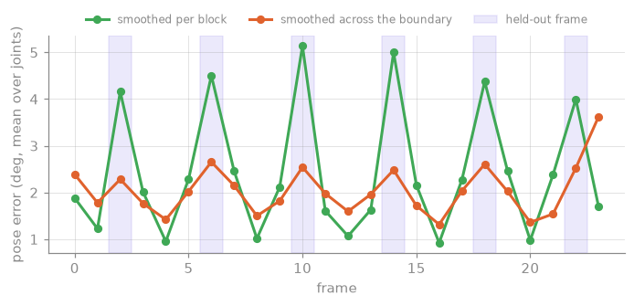
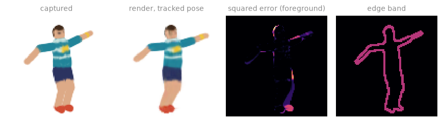
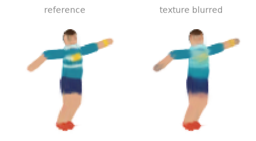
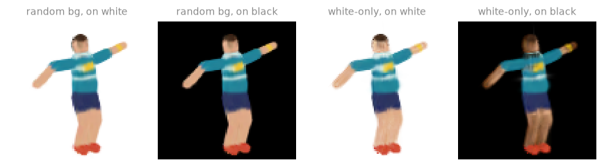
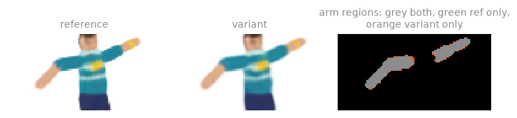
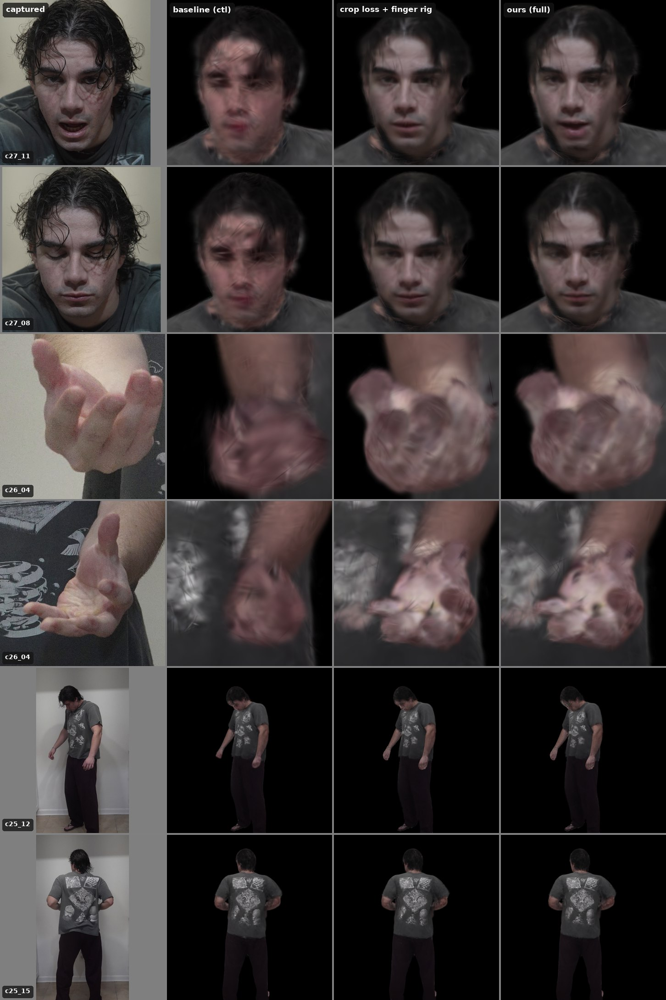

What does a number mean? Splits, seeds and metrics that cannot be gamed#
What you will learn
Why held-out data is spent once you choose with it, and how a sealed set, scored once, gives the number you may report.
How large the difference between two runs of the same recipe is, and the rule that follows: a difference counts only above the seed spread.
Why arms are compared at a fixed iteration and not at a validation-picked checkpoint.
Two ways information leaks from held-out frames into a result, and a test that catches both.
Three metric pitfalls: a foreground score that is mostly edge, a background colour a model can hide in, and regions that move with the model being scored.
Prerequisites: Lesson 5a (cu.fit, cu.evaluate, PSNR) and
Lesson 5b (tracking noise). This lesson fits many very small
avatars; the picture quality is poor on purpose, because we need dozens of runs in two minutes.
The tools of this part live in course_utils/evaluation.py, imported as ev.
1. Three kinds of data#
Every earlier lesson printed a PSNR. This lesson asks what such a number is allowed to claim. The answer depends on what the frames behind it were used for.
Split |
Used for |
What its score means |
|---|---|---|
train |
fitting the texture |
how well the model memorised these frames |
held-out |
choosing between variants |
an estimate of quality on new frames, until you choose with it |
sealed |
nothing, until the choice is frozen |
quality on new frames; scored once |
The toy capture for this lesson is one 24-frame dance. Every fourth frame is held out and the rest are training frames. The poses come from a noisy tracker, as in Lesson 5b: every frame’s pose is off by a few of degrees per joint, and the fit and the scorer both use these tracked poses.
actor = cu.ToyActor(density=1500.0)
cam = cu.orbit_camera(0, size=32)
SIGMA = 3.0 # tracker noise, degrees per joint
def capture(name, n_frames, seed, sigma=SIGMA):
"""A take: the video, and the poses a tracker reports for it."""
poses, trans = cu.motion(name, n_frames)
video = cu.make_video(actor, poses, trans, cam=cam, noise=0.03, seed=seed)
return video, cu.perturb_poses(poses, sigma, seed=seed + 100)
take, track = capture("dance", 24, seed=1)
held_idx = list(range(2, 24, 4))
train_idx = [t for t in range(24) if t not in held_idx]
train, held = take.subset(train_idx), take.subset(held_idx)
fig = cu.show_images([take.frame(t) for t in range(0, 24, 2)],
[("held-out " if t in held_idx else "train ") + str(t) for t in range(0, 24, 2)],
ncols=12, size=0.75)
print(len(train), "training frames,", len(held), "held-out frames, at", cam.width, "px")
18 training frames, 6 held-out frames, at 32 px

One recipe is one way to build the avatar: a model size, a learning rate, a number of iterations. The function below runs the recipe for a given random seed. The seed sets the initial texture and the order in which frames are visited, and nothing else. It also keeps a copy of the texture every few steps, which Section 5 needs.
ITERS, EVERY = 60, 6
def run_recipe(seed, poses=track):
avatar = cu.ShellAvatar(seed=seed, density=300.0, offsets=(0.0, 0.03), tex_res=(6, 8))
_, snaps = ev.fit_with_snapshots(avatar, train, iters=ITERS, every=EVERY, seed=seed, lr=0.3,
poses=poses[train_idx])
return avatar, snaps
def score(avatar, video, poses):
return cu.evaluate(avatar, video, poses=poses)["mean_psnr"]
avatar0, snaps0 = run_recipe(0)
print(f"seed 0: train {score(avatar0, train, track[train_idx]):.2f} dB, "
f"held-out {score(avatar0, held, track[held_idx]):.2f} dB")
seed 0: train 22.93 dB, held-out 22.07 dB
2. The mistake: choose on held-out, report held-out#
Suppose you try twelve ideas: a new loss weight, a schedule, a regulariser. You score each on the held-out frames, keep the best, and report its gain over the baseline. That is the normal workflow, and it has a flaw that the toy can expose exactly.
Here the twelve “ideas” are the same recipe with twelve different seeds. By construction, none of them is better than another. Any difference between them is noise.
N_VARIANTS = 12
runs = [(avatar0, snaps0)] + [run_recipe(s) for s in range(1, N_VARIANTS)]
held_psnr = np.array([score(a, held, track[held_idx]) for a, _ in runs])
pick = int(held_psnr.argmax())
gain_held = held_psnr[pick] - held_psnr.mean()
print("held-out PSNR of the twelve variants:", np.round(held_psnr, 2))
print(f"the winner is variant {pick}: {gain_held:+.2f} dB over the average variant")
held-out PSNR of the twelve variants: [22.07 21.41 21.67 22.02 21.91 21.8 21.6 21.22 21.78 21.82 21.62 21.81]
the winner is variant 0: +0.34 dB over the average variant
The winner looks like a real gain. To see whether it is, we need frames that played no part in the choice. The toy can make as many new takes as we like, so here is an oracle: two fresh takes with other motions, scored for all twelve variants. A real project does not have this luxury, which is the reason for the sealed set of the next section.
fresh = [capture("arms_up", 8, seed=2), capture("wave", 8, seed=4)]
def fresh_score(avatar, takes=fresh):
return float(np.mean([score(avatar, v, tr) for v, tr in takes]))
fresh_psnr = np.array([fresh_score(a) for a, _ in runs])
gain_fresh = fresh_psnr[pick] - fresh_psnr.mean()
fig, axes = plt.subplots(1, 2, figsize=(8.6, 3.2))
order = np.argsort(-held_psnr)
axes[0].bar(range(N_VARIANTS), held_psnr[order] - held_psnr.mean(),
color=[cu.COLORS["error"] if i == pick else cu.COLORS["gaussian"] for i in order])
axes[0].set_xlabel("variant, sorted by held-out score"); axes[0].set_ylabel("held-out PSNR − average (dB)")
axes[0].set_title("what the selection sees")
axes[1].scatter(held_psnr - held_psnr.mean(), fresh_psnr - fresh_psnr.mean(), color=cu.COLORS["gaussian"],
label="variants")
axes[1].scatter([gain_held], [gain_fresh], color=cu.COLORS["error"], s=70, label="the winner", zorder=3)
lim = 1.15 * max(np.abs(held_psnr - held_psnr.mean()).max(), np.abs(fresh_psnr - fresh_psnr.mean()).max())
axes[1].plot([-lim, lim], [-lim, lim], color=cu.plotting.INK, lw=1, ls=":",
label="gain carries over fully")
axes[1].set_xlabel("held-out PSNR − average (dB)"); axes[1].set_ylabel("fresh takes PSNR − average (dB)")
axes[1].set_title("what new data says"); axes[1].legend(fontsize=8)
fig.tight_layout()
print(f"winner's lead on held-out: {gain_held:+.2f} dB on fresh takes: {gain_fresh:+.2f} dB")
winner's lead on held-out: +0.34 dB on fresh takes: +0.08 dB

One winner is one draw, so repeat the selection many times: draw six of the twelve variants at random, pick the best of the six on held-out, and record its lead over the average variant on both kinds of data.
rng = np.random.default_rng(0)
lead_held, lead_fresh = [], []
for _ in range(4000):
subset = rng.choice(N_VARIANTS, 6, replace=False)
w = subset[held_psnr[subset].argmax()]
lead_held.append(held_psnr[w] - held_psnr.mean()); lead_fresh.append(fresh_psnr[w] - fresh_psnr.mean())
lead_held, lead_fresh = float(np.mean(lead_held)), float(np.mean(lead_fresh))
print(f"average lead of the selected variant: held-out {lead_held:+.3f} dB, fresh takes {lead_fresh:+.3f} dB")
assert lead_held > 0 and lead_fresh < 0.6 * lead_held, "most of a selected lead should not carry over"
average lead of the selected variant: held-out +0.283 dB, fresh takes +0.059 dB
Most of the winner’s lead does not carry over to the fresh takes. This is selection bias. The maximum of several noisy numbers is larger than a typical one, whether or not anything real separates them. The held-out score of the winner is therefore biased upward by the act of choosing it, and the more variants you try, the larger the bias. Whatever part does carry over belongs to that one lucky run, not to the idea: train the same “idea” again with another seed and it is an average variant again.
Held-out data is not ruined by this. It is still the right tool for choosing. But a score that was used to choose can no longer be reported as the quality on new data: the held-out set is spent.
3. A sealed set is scored once#
The fix is a third split that takes no part in fitting or choosing. The order of operations is the whole point:
compare variants on held-out data and choose;
freeze the choice and record the hash of its checkpoint;
open the sealed set, score the frozen checkpoint, and report that number, whatever it is.
ev.SealedSet is a small guard for this workflow. It keeps the data behind an explicit open(), which
demands a checkpoint hash, writes it to a log and refuses to open a second time.
sealed = ev.SealedSet(capture("squat", 8, seed=6), name="sealed squat take")
print(sealed)
typical = int(np.argsort(held_psnr)[N_VARIANTS // 2]) # a middling variant stands in for "the baseline"
chosen, baseline = runs[pick][0], runs[typical][0]
frozen_hash = ev.state_hash(chosen) # every learned number of the chosen model
print("frozen checkpoint:", frozen_hash)
video_s, track_s = sealed.open(frozen_hash, note=f"variant {pick} chosen on held-out")
assert ev.state_hash(chosen) == frozen_hash # the model scored is the model that was frozen
sealed_gain = score(chosen, video_s, track_s) - score(baseline, video_s, track_s)
held_gain_vs_base = held_psnr[pick] - held_psnr[typical]
print(f"winner minus baseline (variant {typical}): held-out {held_gain_vs_base:+.2f} dB, sealed {sealed_gain:+.2f} dB")
print(sealed.log)
SealedSet('sealed squat take', data fd09db760f2003c0, sealed)
frozen checkpoint: fda8a71bfab46925
winner minus baseline (variant 5): held-out +0.27 dB, sealed -0.32 dB
[{'checkpoint': 'fda8a71bfab46925', 'data': 'fd09db760f2003c0', 'note': 'variant 0 chosen on held-out'}]
The sealed number is the one to report. If it disappoints, the temptation is to adjust something and score again. The guard refuses:
try:
sealed.open(ev.state_hash(runs[1][0]), note="one more try")
except ev.SealedSetError as err:
print("refused:", err)
assert len(sealed.log) == 1
refused: sealed squat take: already scored once, for checkpoint fda8a71bfab46925. A sealed set is spent after one scoring.
Python cannot stop someone who wants to read the data. The guard’s job is smaller and still useful: the honest path is one call, the dishonest one raises an error, and the log records which checkpoint the sealed number belongs to. The hash matters as much as the lock. Without it, nothing shows that the model scored after the unsealing is the model chosen before it.
4. The seed spread is the noise floor#
Section 2 already contains a second lesson. Twelve runs of one recipe gave twelve different scores. The spread of those scores is the smallest difference this experiment can resolve.
With seeds \(s = 0 \dots S-1\) and scores \(m_s\), the seed spread is
which for two seeds is \(|m_0 - m_1|\). The rule the rest of the course uses is:
A difference between two arms counts only if it has the same sign on every seed and its smallest magnitude exceeds the seed spread (and a fixed floor, if one was registered).
spread = ev.seed_spread(held_psnr)
print(f"held-out PSNR over {N_VARIANTS} seeds: mean {held_psnr.mean():.2f} dB, spread {spread:.2f} dB")
# An apparent win: the winner against the baseline, one run each.
single = held_psnr[pick] - held_psnr[typical]
print(f"single-run comparison: {single:+.2f} dB; counted: {ev.counted([single], spread)}")
assert ev.counted([single], spread) == 0
held-out PSNR over 12 seeds: mean 21.73 dB, spread 0.84 dB
single-run comparison: +0.27 dB; counted: 0
A single-run comparison of two seeds of the same recipe can never exceed the spread, so it is never counted. That is the rule working: the “win” of Section 2 is thrown out without any fresh take.
Now a difference that is real. Lesson 5b showed that pose error is what limits a fit. Suppose a better tracker halves the error on every take. Three seeds of the same recipe, with the better poses:
track_b = cu.perturb_poses(take.poses, SIGMA / 2, seed=101) # same noise pattern, half the size
runs_b = [run_recipe(s, poses=track_b) for s in range(3)]
held_b = np.array([score(a, held, track_b[held_idx]) for a, _ in runs_b])
delta = held_b - held_psnr[:3] # arm minus base, seed by seed
both_spread = max(spread, ev.seed_spread(held_b))
print("better tracker, held-out PSNR:", np.round(held_b, 2), f"(spread {ev.seed_spread(held_b):.2f} dB)")
print("difference per seed:", np.round(delta, 2), "-> counted:", ev.counted(delta, both_spread))
assert ev.counted(delta, both_spread) == 1
fig, ax = plt.subplots(figsize=(6.4, 2.6))
rng = np.random.default_rng(0)
ax.scatter(held_psnr, 0.0 + 0.06 * rng.standard_normal(N_VARIANTS), color=cu.COLORS["gaussian"],
label="base recipe, 12 seeds")
ax.scatter([held_psnr[pick]], [0.0], color=cu.COLORS["error"], s=70, zorder=3, label="the 'winner' of Section 2")
ax.scatter(held_b, 1.0 + 0.06 * rng.standard_normal(3), color=cu.COLORS["truth"], label="better tracker, 3 seeds")
ax.axvspan(held_psnr.min(), held_psnr.max(), color=cu.COLORS["gaussian"], alpha=0.12)
ax.set_yticks([0, 1]); ax.set_yticklabels(["base", "better tracker"]); ax.set_ylim(-0.6, 1.6)
ax.set_xlabel("held-out PSNR (dB)"); ax.legend(fontsize=8, loc="center");
better tracker, held-out PSNR: [25.18 24.97 25.01] (spread 0.21 dB)
difference per seed: [3.11 3.56 3.34] -> counted: 1

The shaded band is the seed spread of the base recipe. The winner of Section 2 sits inside it. The better tracker sits far outside it on every seed. The first is noise and the second is a result, and the rule tells them apart without anyone’s judgement.
Two practical notes. First, the spread is measured per metric and per split: a region metric on six frames is noisier than a whole-frame metric on sixty. Second, two seeds give a crude spread. It is a floor for decisions, not a confidence interval; Lesson 8b builds intervals.
5. Fixed iteration, or the best checkpoint?#
Training loops often save the checkpoint with the best validation score, best.pt. It sounds harmless. It
is the selection of Section 2 again, applied along the training run instead of across variants.
run_recipe stored the texture every few steps. For eight seeds, compare two policies: take the model at the
fixed last iteration, or take the stored checkpoint with the best held-out score.
N_CK = 8
probe = cu.ShellAvatar(density=300.0, offsets=(0.0, 0.03), tex_res=(6, 8))
steps = [s for s, _ in runs[0][1]][4:] # the plateau: the second half of training
curve_held = np.zeros((N_CK, len(steps))); curve_fresh = np.zeros((N_CK, len(steps)))
for i in range(N_CK):
for k, (step, tex) in enumerate(runs[i][1][4:]):
ev.set_texture(probe, tex)
curve_held[i, k] = score(probe, held, track[held_idx])
curve_fresh[i, k] = fresh_score(probe)
best = curve_held.argmax(1)
rows = np.arange(N_CK)
move_held = curve_held[rows, best] - curve_held[:, -1]
move_fresh = curve_fresh[rows, best] - curve_fresh[:, -1]
fig, axes = plt.subplots(1, 2, figsize=(8.6, 3.0))
for i in range(N_CK):
axes[0].plot(steps, curve_held[i], color=cu.COLORS["gaussian"], alpha=0.45, lw=1.2,
label="held-out curve, one seed" if i == 0 else None)
axes[0].scatter(np.array(steps)[best], curve_held[rows, best], color=cu.COLORS["error"], zorder=3,
label="best checkpoint")
axes[0].set_xlabel("iteration"); axes[0].set_ylabel("held-out PSNR (dB)"); axes[0].legend(fontsize=8)
axes[1].bar(rows - 0.2, move_held, 0.4, color=cu.COLORS["error"], label="held-out (used for the pick)")
axes[1].bar(rows + 0.2, move_fresh, 0.4, color=cu.COLORS["truth"], label="fresh takes")
axes[1].set_xlabel("seed"); axes[1].set_ylabel("best checkpoint − fixed iteration (dB)"); axes[1].legend(fontsize=8)
fig.tight_layout()
print(f"picking the best checkpoint moves held-out PSNR by {move_held.mean():+.2f} dB on average "
f"(up to {move_held.max():+.2f}); the same checkpoints move the fresh takes by {move_fresh.mean():+.2f} dB")
assert move_held.min() >= 0 and move_held.mean() > 1.5 * abs(move_fresh.mean())
picking the best checkpoint moves held-out PSNR by +0.23 dB on average (up to +0.66); the same checkpoints move the fresh takes by +0.06 dB

On the plateau the held-out curve wanders by a fraction of a decibel from one checkpoint to the next. Picking its highest point can only raise the held-out score, and it raises it by about as much as the curve wanders. On fresh takes the picked checkpoints gain far less, or nothing. The pick manufactures a held-out gain of the size of the effects one wants to measure, and a different amount for every arm. Compare arms at one fixed iteration, decided in advance.
6. Leakage#
A split protects a number only if nothing derived from the protected frames reaches the model or the scorer’s inputs. Pipelines have many stages before the fit (tracking, smoothing, normalisation), and each is a place to leak. A leak rarely looks like cheating; it looks like a sensible preprocessing step applied to the whole table. Two examples follow, one large and one small.
6.1 Smoothing poses across a split boundary#
Real trackers are refined against the training pixels (Lesson 5b), so training frames end up with much better poses than the raw tracker gives. We imitate that by giving the training frames a small pose error and leaving the held-out frames with the raw tracker error. Then somebody adds a reasonable step: smooth the pose track over time to remove jitter.
ev.smooth_poses applies a Gaussian window over frames. Given blocks, it smooths each block on its own.
Without blocks, it smooths the whole take, across every train/held-out boundary.
refined = cu.perturb_poses(take.poses, 0.5, seed=7) # stands in for poses refined on training pixels
mixed = track.clone(); mixed[train_idx] = refined[train_idx] # train: refined, held-out: raw tracker
leak_model = cu.ShellAvatar(seed=0, density=300.0, offsets=(0.0, 0.03), tex_res=(6, 8))
cu.fit(leak_model, train, iters=ITERS, seed=0, lr=0.3, poses=mixed[train_idx])
isolated = ev.smooth_poses(mixed, sigma=1.0, blocks=[train_idx, held_idx])
leaky = ev.smooth_poses(mixed, sigma=1.0) # one block: the window crosses the boundary
def pose_error_deg(tr):
return cu.to_np(torch.rad2deg((tr - take.poses).norm(dim=-1)).mean(1))
psnr_iso = score(leak_model, held, isolated[held_idx])
psnr_leak = score(leak_model, held, leaky[held_idx])
fig, ax = plt.subplots(figsize=(7.4, 2.8))
t = np.arange(24)
ax.plot(t, pose_error_deg(isolated), color=cu.COLORS["truth"], marker="o", label="smoothed per block")
ax.plot(t, pose_error_deg(leaky), color=cu.COLORS["error"], marker="o", label="smoothed across the boundary")
for k, h in enumerate(held_idx):
ax.axvspan(h - 0.5, h + 0.5, color=cu.COLORS["camera"], alpha=0.15, label="held-out frame" if k == 0 else None)
ax.set_xlabel("frame"); ax.set_ylabel("pose error (deg, mean over joints)")
ax.legend(fontsize=8, ncols=3, loc="lower center", bbox_to_anchor=(0.5, 1.0))
print(f"held-out PSNR, same model, same pixels: per-block {psnr_iso:.2f} dB, across the boundary {psnr_leak:.2f} dB")
train_err = [float(pose_error_deg(tr)[train_idx].mean()) for tr in (isolated, leaky)]
print(f"pose error on the training frames: per-block {train_err[0]:.2f} deg, across the boundary {train_err[1]:.2f} deg")
assert psnr_leak > psnr_iso + 0.5 and train_err[1] > train_err[0]
held-out PSNR, same model, same pixels: per-block 22.05 dB, across the boundary 25.47 dB
pose error on the training frames: per-block 1.73 deg, across the boundary 1.89 deg

The model is the same and the held-out images are the same. Only the held-out poses changed: each one borrowed from its refined training neighbours, and the held-out score rose by more than any model change in this lesson. A new take has no refined neighbours, so this gain does not exist at deployment. (On the training frames the same smoothing does a little harm: each one is pulled toward a noisy held-out neighbour.)
The general test for a leak does not need a score. Change a protected input and see whether anything on the other side of the boundary moves:
poked = mixed.clone()
poked[train_idx[3]] += 0.2 # change one TRAINING frame's pose
moved_leaky = (ev.smooth_poses(poked, 1.0)[held_idx] - leaky[held_idx]).abs().max()
moved_iso = (ev.smooth_poses(poked, 1.0, blocks=[train_idx, held_idx])[held_idx] - isolated[held_idx]).abs().max()
print(f"largest change of a held-out pose: across the boundary {float(moved_leaky):.3f} rad, "
f"per block {float(moved_iso):.3f} rad")
assert float(moved_iso) == 0.0 and float(moved_leaky) > 0.01
largest change of a held-out pose: across the boundary 0.011 rad, per block 0.000 rad
6.2 A statistic computed over all rows#
The second leak is quieter. Many pipelines compute a statistic over the dataset: a mean colour, a normalisation, a neutral pose. The toy version: when the tracker loses the arms, the pipeline falls back to a neutral arm pose, the median of the tracked arm poses. Over which rows is that median taken?
A new held-out take, with raised arms, makes the question matter. (The sealed take of Section 3 is spent, so it cannot be used here.)
held2, track2 = capture("arms_up", 12, seed=8)
arm_joints = [cu.joint_index(j) for j in ("l_shoulder", "r_shoulder", "l_elbow", "r_elbow")]
lost = list(range(0, 12, 2)) # frames on which the tracker lost the arms
def with_fallback(neutral):
tr = track2.clone()
for t in lost:
tr[t, arm_joints] = neutral
return tr
neutral_train = track[train_idx][:, arm_joints].median(0).values
neutral_all = torch.cat([track[train_idx], track2])[:, arm_joints].median(0).values # includes held-out rows
shift = float(torch.rad2deg((neutral_all - neutral_train).norm(dim=-1)).max())
effect = score(leak_model, held2, with_fallback(neutral_all)) - score(leak_model, held2, with_fallback(neutral_train))
print(f"the neutral pose moves by up to {shift:.2f} deg when held-out rows are included")
print(f"held-out PSNR changes by {effect:+.3f} dB; the seed spread of this metric's recipe is {spread:.2f} dB")
assert shift > 0 and abs(effect) < spread
the neutral pose moves by up to 3.71 deg when held-out rows are included
held-out PSNR changes by -0.074 dB; the seed spread of this metric's recipe is 0.84 dB
The statistic does depend on the held-out rows, so this is a leak. Its effect on the score is far below the seed spread. Both facts matter:
You could not have known the size without running both versions. The first leak looked just as innocent.
The fix costs nothing: compute every statistic on training rows only. Then there is nothing to argue about.
When you find such a leak after publishing, say so, rerun, and report the change next to the spread.
7. Metrics that can be gamed#
The last three pitfalls are about the metric itself. For these we fit one better model, at 48 px with the true poses, and score at 96 px.
cam48 = cu.orbit_camera(0, size=48)
clean = cu.make_video(actor, take.poses, take.trans, cam=cam48)
clean_train = clean.subset(train_idx)
held96 = cu.make_video(actor, take.poses[held_idx], take.trans[held_idx], cam=cam48.scaled(2))
target96 = torch.stack([held96.frame(t) for t in range(len(held96))])
def fit48(offsets=(0.0, 0.03), **kw):
avatar = cu.ShellAvatar(seed=0, density=500.0, offsets=offsets, tex_res=(10, 12))
cu.fit(avatar, clean_train, iters=70, lr=0.2, seed=0, **kw)
return avatar
reference = fit48()
7.1 Foreground PSNR is mostly an edge score#
Foreground PSNR averages the squared error over the pixels inside the true mask. It sounds like the right way to ignore the background. Split those pixels into an edge band, within two pixels of the silhouette, and the interior, and ask where the error is when the poses are the tracked ones:
tracked96 = cu.perturb_poses(held96.poses, SIGMA, seed=3)
mask = held96.mask > 0.5
band = ev.edge_band(held96.mask, width=2)
interior = mask & ~band
def region_report(avatar):
imgs, _ = cu.render_video(avatar, held96, poses=tracked96)
se = ((imgs - target96) ** 2).sum(-1)
return imgs, {"fg": ev.masked_psnr(imgs, target96, mask), "interior": ev.masked_psnr(imgs, target96, interior),
"band_share": float(se[band].sum() / se[mask].sum())}
imgs_ref, rep_ref = region_report(reference)
pixel_share = float(band.sum() / mask.sum())
err = ((imgs_ref - target96) ** 2).sum(-1) * mask
cu.show_images([target96[1], imgs_ref[1], err[1], band[1].float()],
["captured", "render, tracked pose", "squared error (foreground)", "edge band"], size=2.0,
vmax=float(err[1].max()));
print(f"the edge band holds {100 * pixel_share:.0f}% of the foreground pixels "
f"and {100 * rep_ref['band_share']:.0f}% of the squared error")
assert rep_ref["band_share"] > 0.6 and rep_ref["band_share"] > pixel_share + 0.15
the edge band holds 46% of the foreground pixels and 82% of the squared error

A pose that is off by two degrees moves the outline by a pixel or so, and at the outline the error is the full contrast between the person and whatever lies behind. That swamps everything inside. The consequence: foreground PSNR barely sees interior detail. Blur the texture of the reference model, which destroys the shirt stripes and the logo, and compare:
soft = cu.ShellAvatar(seed=0, density=500.0, offsets=(0.0, 0.03), tex_res=(10, 12))
with torch.no_grad():
tex = reference.texture.clone()
K, P, _, th, tw = tex.shape
blurred = torch.nn.functional.avg_pool2d(tex[:, :, :3].reshape(K * P, 3, th, tw), 3, 1, 1, count_include_pad=False)
tex[:, :, :3] = blurred.reshape(K, P, 3, th, tw)
soft.texture.copy_(tex)
imgs_soft, rep_soft = region_report(soft)
drop_fg, drop_in = rep_ref["fg"] - rep_soft["fg"], rep_ref["interior"] - rep_soft["interior"]
cu.show_images([imgs_ref[1], imgs_soft[1]], ["reference", "texture blurred"], size=2.0);
print(f"blurring the texture costs {drop_fg:.2f} dB of foreground PSNR and {drop_in:.2f} dB of interior PSNR")
assert drop_in > 1.5 * drop_fg > 0
blurring the texture costs 0.83 dB of foreground PSNR and 2.94 dB of interior PSNR

The interior score reports the damage several times more strongly than the foreground score does. Report both, or report regions (Section 7.3).
7.2 One background colour can hide a hole#
A whole-frame score needs a background. If the scorer uses one fixed colour, a model can be wrong in ways that this colour hides. Train the same recipe on a white background only, with no mask term in the loss:
white_only = fit48(random_bg=False, w_alpha=0.0)
held48 = clean.subset(held_idx)
bw_ref, bw_white = ev.evaluate_bw(reference, held48), ev.evaluate_bw(white_only, held48)
t0 = 1
views = []
for avatar in (reference, white_only):
for bg in ((1.0, 1.0, 1.0), (0.0, 0.0, 0.0)):
views.append(avatar.render(held96.cams[t0], held96.poses[t0], held96.trans[t0], bg=bg)[0])
cu.show_images(views, ["random bg, on white", "random bg, on black", "white-only, on white", "white-only, on black"],
size=2.0);
for name, r in (("trained on random backgrounds", bw_ref), ("trained on white only", bw_white)):
print(f"{name:30s} white {r['mean_white']:.2f} dB black {r['mean_black']:.2f} dB bw {r['mean_bw']:.2f} dB")
gap_white = bw_ref["mean_white"] - bw_white["mean_white"]
gap_black = bw_ref["mean_black"] - bw_white["mean_black"]
assert gap_black > 3 * abs(gap_white) and gap_black > 3.0
trained on random backgrounds white 36.32 dB black 35.53 dB bw 35.92 dB
trained on white only white 34.59 dB black 22.47 dB bw 28.53 dB

On white, the white-only model is a little behind. On black, it falls apart: wherever the person is
light, it learned to be partly transparent and let the white background do the work. Nothing in a white
score can see that. The remedy is to composite the render and the target on both black and white and
average the two scores (“bw” above). A hole or a haze shows in at least one of them. cu.fit uses a random
background colour per step for the same reason.
7.3 Regions must not move with the model#
Region scores (face, hands, torso) need region masks. The convenient source is the model being scored: render it with the part labels as colours. But then two variants with different silhouettes are scored on different pixels. Take a variant whose shells sit inside the body instead of on and outside it, and score the arms:
thin = fit48(offsets=(-0.03, -0.02))
ARMS = ("l_upperarm", "r_upperarm", "l_forearm", "r_forearm", "l_hand", "r_hand")
def arm_region(model):
return torch.stack([ev.region_mask(model, held96.cams[t], held96.poses[t], held96.trans[t], ARMS)
for t in range(len(held96))])
region_ref, region_thin = arm_region(reference), arm_region(thin)
imgs_r, _ = cu.render_video(reference, held96)
imgs_t, _ = cu.render_video(thin, held96)
ref_score = ev.masked_psnr(imgs_r, target96, region_ref)
thin_own = ev.masked_psnr(imgs_t, target96, region_thin)
thin_fixed = ev.masked_psnr(imgs_t, target96, region_ref)
diff = torch.zeros(*region_ref[t0].shape, 3)
diff[region_ref[t0] & region_thin[t0]] = torch.tensor([0.55, 0.55, 0.55])
diff[region_ref[t0] & ~region_thin[t0]] = torch.tensor([0.25, 0.66, 0.34]) # only in the reference region
diff[~region_ref[t0] & region_thin[t0]] = torch.tensor([0.88, 0.38, 0.18]) # only in the variant's own region
crop = slice(12, 60) # the rows that contain the arms
cu.show_images([imgs_r[t0][crop], imgs_t[t0][crop], diff[crop]], ["reference", "variant", "arm regions: grey both, green ref only,\norange variant only"],
size=2.2);
print(f"arm pixels: reference region {int(region_ref.sum())}, variant's own region {int(region_thin.sum())}")
print(f"arm PSNR reference {ref_score:.2f} dB | variant in its own region {thin_own:.2f} dB "
f"| variant in the reference region {thin_fixed:.2f} dB")
assert int(region_ref.sum()) != int(region_thin.sum()) and abs(thin_own - thin_fixed) > 0.3
arm pixels: reference region 2427, variant's own region 2591
arm PSNR reference 29.96 dB | variant in its own region 26.07 dB | variant in the reference region 28.85 dB

The variant’s score changes with the mask it is scored in, although its pixels did not change. A comparison “reference in its region against variant in its own region” therefore mixes two things: how good the pixels are, and which pixels were counted. The direction of the error is not predictable; a variant that shrinks a part can drop exactly the pixels it gets wrong. The remedy is to take the regions from one reference model and use them for every arm. The same warning applies to the reference masks: the scoring reference is part of the metric, and a change of reference can reverse a ranking.
From the real system#

Held-out frames, one row per region. Frames from the review list that was fixed before model selection: the captured frame, the body-only baseline, the arm with crop loss and finger rig, and the selected hi-fi model. The label in each first panel is the take it comes from; none is a sealed take. Read the grid the way the lesson reads its metrics: the close-up rows change a lot, because the baseline never trained on close-ups, while the full-body rows are nearly identical, which is where the baseline is in fact slightly ahead. Renders are a little offset from the capture because held-out frames get no per-frame pose refit; this applies to every model equally.
A held-out segment in motion. A range-of-motion segment the standard track kept out of training, captured (left) and rendered by the standard-track avatar in the tracked poses (right). Drag the divider to compare silhouettes. Notice where the two disagree: at the arms and hands, where the tracked pose is least accurate, and in the cloth, which the model can only move with the body.
The sealed takes are scored once and are never shown; see the evaluation protocol.
In the real pipeline#
The project’s protocol is the one built here, with real takes in place of toy ones (README, “Evaluation protocol”).
Idea |
Where |
What is different there |
|---|---|---|
Locked, hashed splits; no tracking state across a boundary |
|
Split files are validated for disjoint membership and their hash before any fit; each tracking block is tracked on its own |
Sealed scoring, once, after a freeze |
|
The freeze hashes the checkpoint, the inputs and the code; a sidecar file reserves the single scoring attempt. The document calls these “workflow guards, not OS access control” |
Whole-frame “bw” PSNR |
|
Exact black and white re-composites of the render, plus spill and hole rates |
Regions from one reference model |
|
Face, hand, hair and foot regions at native crop resolution, taken from the control model for every arm |
Published facts that match the sections above, all from the README and RESULTS.md:
Seed spread. Main arms are trained with two seeds and a difference counts only above \(|s_0 - s_1|\) of the same column. The rule demoted several apparent wins.
Fixed iteration. Arms are compared at iteration 30,000; a validation-picked
best.ptmoves held-out scores by 0.05–0.29 dB, far more than any single flag’s effect.A statistic over all rows. An audit found that the neutral-expression median included held-out rows. Two seeds were retrained with a training-only median: held-out face PSNR changed by −0.03 and −0.05 dB, inside the seed spread (docs/research_brief.md). The fix is opt-in in the published code and the audit note sits next to the affected tables.
Metrics. Foreground PSNR is 45–80 % edge band; a grey-background PSNR flattered a single-frame model; and scored against the masks of a weaker segmenter, a better model looked worse.
The toy differs in scale and in one important way: it has an oracle. We could draw fresh takes to prove that a gain was noise. A real project has only the sealed takes, once.
Summary#
A held-out score that was used to choose is biased upward. Choose on held-out data, freeze the choice with a hash, then score a sealed set once and report that.
Runs of one recipe differ. The seed spread is the noise floor, measured per metric, and a difference counts only above it with the same sign on every seed.
Picking the best checkpoint by validation is selection too. Compare arms at a fixed iteration.
A leak is any path from protected frames into the model or the scorer’s inputs. Test for it by changing a protected input and watching the other side; compute statistics on training rows only; track each block on its own.
Foreground PSNR is dominated by the edge band, one background colour can hide holes, and region masks must come from one reference model for every arm.
Exercises#
Selection bias grows with the number of variants. Using the scores already computed, estimate the expected held-out lead of the best of \(k\) variants for \(k = 2, 4, 8, 12\) by drawing random subsets.
In Section 6.2 the held-out take has 12 rows against 18 training rows. Repeat the computation with the held-out take included three times in the median. What happens to the neutral pose and to the effect?
Write a function
spill(alpha, mask)that returns the fraction of rendered pixels (alpha above 0.5) that lie outside the true mask, and compare the reference model with the white-only model of Section 7.2.
Solution 1
rng = np.random.default_rng(0)
for k in (2, 4, 8, 12):
lead = [held_psnr[rng.choice(N_VARIANTS, k, replace=False)].max() - held_psnr.mean() for _ in range(2000)]
print(k, round(float(np.mean(lead)), 3))
The lead grows roughly with the logarithm of \(k\). It never needs a real difference between the variants.
Solution 2
rows = torch.cat([track[train_idx]] + [track2] * 3)[:, arm_joints]
neutral_3x = rows.median(0).values
print(torch.rad2deg((neutral_3x - neutral_train).norm(dim=-1)))
print(score(leak_model, held2, with_fallback(neutral_3x)) - score(leak_model, held2, with_fallback(neutral_train)))
With held-out rows in the majority the median moves to the held-out take’s own arm pose, and the fallback now “knows” the answer for that take. The leak was the same all along; only its size changed.
Solution 3
def spill(alpha, mask):
a, m = alpha > 0.5, mask > 0.5
return float((a & ~m).sum() / a.sum().clamp(min=1))
for name, avatar in (("reference", reference), ("white only", white_only)):
_, alphas = cu.render_video(avatar, held96)
print(name, round(spill(alphas, held96.mask), 4), "coverage", round(float(alphas[held96.mask > 0.5].mean()), 3))
Spill counts opaque pixels outside the mask. The white-only model’s main defect is the opposite one, low coverage inside the mask, which the second number shows. A set of metrics needs both directions.
References#
Structural similarity, a metric that looks at local structure instead of single pixels: [Wang et al., 2004]. Learned perceptual distance: [Zhang et al., 2018]. The real pipeline reports both next to PSNR.
Why to write the analysis down before seeing the outcome: [Nosek et al., 2018]. The next lesson applies it.
The project’s protocol and audit: README, RESULTS.md, docs/research_brief.md.